Kurtulmuş ırktı işte bu
Tepeye doğru saldıran
İsyancıların bulunduğu yerlere
Gözlerini kan bürümüş savaşan
başkent yüzyılını doldurdu
General Miles, gösterişli üniforması, yerinde duramayan savaş atıyla –özellikle de hayvan boyuna huysuzlandığından– bütün bakışları üzerinde topladı. Bando tam General'in önünden geçerken atı şaha kalktı, arka ayakları üzerinde neredeyse dimdik durdu. General Miles, hemen ürkmüş hayvanın dizginlerine sarıldı, atı denetim altına alma çabasıyla mahmuzları batırdı, izleyicilerin dehşetle açılmış gözleri önünde at arkaya devrilip dosdoğru General'in üstüne yayıldı. General Miles'in yara almadığını, ama atın böğründen önemli büyüklükte deri parçasının kalkmış olduğunu halk sevinç içinde gördü. General Miles'in giysilerinin hemen her santimi tepeden tırnağa sokağın tozuna batmış, omuzları arasında birkaç santimlik yırtık oluşmuştu. Birilerinin gelip giysisinin tozunu silkelemesini beklemeden General Miles yine atına bindi, bu olanlar gündelik şeylermiş gibi geçit törenini izledi.
Bu olay doğal olarak kalabalığın ilgisini uyandırdı ve General'in şapkasını çıkarıp, flamalar da gözden yitinceye kadar öyle kalmadıkça asla bayrağın önünden geçmesine izin vermeyeceği gerçeğine dikkatleri çekti.
B Bölüğü'nün yürekli komutanı
En önde çarpışıyordu
Sanki asker doğurmuştu onu anası
Kurşunları hiçe sayıyordu
memurlar ayıp nedir bilmiyor
Sağlık kurumları Chicago Irmağı'nın suyunu lağım kanalına dönüştürüyor mıchıgan gölü suların babasıyla el sıkışıyor Alman züchterverein kanarya ses yarışması başladı On altıya bir oranında ikili metal sistemi için verilen savaşımın yitirilmediğini söylüyor Bryan
ingilizler mafeking'de yenildi
Çünkü bir sürü insan öldürüldü Luzon'da
adalar üzerinde hak iddia edildi
Indianalı eski Kongre üyesi Posey, Hamilton Kulüp'te Bir Konuşma Yaptı
uğultular yeni yüzyılı kutladı
işçiler yeni yüzyılı kutladı
kiliseler yeni yüzyılı kutladı
Mr. McKinley yeni yıla zorlu bir çalışma içinde girdi.
ulus yüzyılın doğuşunu kutladı
Indianapolis'teki Columbia Kulüp şöleninde “Yaşasın Columbia” diye kalkan kadehleri yanıtlayan eski Başkan Benjamin Harrison, kendisine söz verildiğinde şunları söyledi: Bölgesel yayılmaya karşı ne burada ne de başka bir yerde ileri süreceğim sav var; ama kimilerinin yaptığı gibi bölgesel yayılmaya ulusal gelişme için en güvenilir, en çekici yol olarak da bakmıyorum. Bol ve ucuz kömürün, demirin, besin maddelerindeki çok aşırı üretimin, üretimdeki yeni buluşlarla iktisadiliğin bize sağladığı ayrıcalıkları kullanarak şimdi en eski, en büyük sömürgeci ulusları bile geride bırakmış bulunuyoruz.
Sosyete Kızları Çılgına Döndü: Dedektiflerle dans etti.
Çünkü bir sürü insan öldürüldü Luzon'da
Mindanao'da
new jersey'de sokak kadınları karışıklık çıkardı
Önderliklerini yapan kadınlardan biri taşbasması resminde kızıla kesmiş sobanın üzerine neredeyse çırılçıplak oturmuştu; bir elinde ağzına kadar dolu şarap bardağı, ötekinde kurdeleye sarılı dağılmış bir çift ıstakoz tutuyordu.
Çünkü bir sürü insan öldürüldü Luzon'da
Mindanao'da
Samar'da
“Yirminci yüzyıla” kalkan kadehlere karşılık Senatör Albert J. Beveridge söz alarak şöyle dedi: Yirminci yüzyıl Amerika'nın olacaktır. Amerikan düşüncesi onu yönetecektir. Amerikan gelişmesi ona rengini, yönünü verecektir. Amerikan gerçekleri onu süsleyecektir.
Uygarlık, Şanghay'da hiçbir zaman egemenliğini yitirmeyecektir. Uygarlık, hiçbir zaman Hongkong'dan ayrılmayacaktır. Pekin'in kapıları bir daha hiçbir zaman çağdaş insanın yöntemlerine kapanmayacaktır. Maddesel yönden olduğu kadar ahlak yönünden de dünya, yeniden biçimlenmeye başladı ve devrimler hiçbir zaman geriye gitmez.
Öldürüldü bir sürü iyi insan Filipinler'de
Yapayalnız bir mezarda uyuyor.
Sine-göz (1)
sokakta yürürken özenerek atmalısın adımlarını hep kaldırım taşlarına basmalısın yoksa pırıl pırıl tedirgin otları ezersin Annenin eline asılırsan daha da kolay hem böylece parmak uçlarında da yürüyebilirsin ama hızlı yürürken ne çok ot çiğnemek zorunda kalıyorsun zavallı yaralı yeşil diller büzülüyor ayağının altında belki de bu yüzden bu insanlar böylesine öfkeli yumruklarını sallayarak bizi izliyor taş atıyorlar kocaman adamlar taş atıyor Annem hızla yürüyor koşuyoruz kahverengi kumaştan giysisinin titreyen kıvrımları altından zavallı ezilmiş otların arasından ayakları sipsivri dışarı fırlıyor Englander bir taş parçası çınlıyor kaldırımda
Çabuk hayatım çabuk kartpostalcı dükkanında sessiz öfkeli insanlar dışarda içeri giremezler hem non nein nicht englander amerikanisch americain Hoch Amerika Vive l'Amérique[1] O gülüyor Hayatım ah nasıl da beni korkuttular
Güney Afrika ovalarında savaş Kruger Bloemfontein Lady Smith bir de Kraliçe Victoria sivri dantel şapkasıyla yaşlı hanımefendi yılbaşında askerlere çikolata yolladılar
tezgâhın altı karanlık hanımefendi tatlı Hollandalı hanımefendi Amerikalıları seviyor Trenton'da yakınları var hani sana karanlıkta o güzel otellerin sarayların parıldayan kartpostallarını gösterir ya O que c'est beau schön ne hoş ne hoş ay ışığı kıpır kıpır köprünün altında ve karanlıkta tezgâhın altında küçücük lambalar yanıyor liman çevresinde otellerin pencereleri O que c'est beau la lune[2]
ve kocaman bir ay
Mac
Rüzgâr ırmağın karşısındaki gümüş fabrikalarından esmeye başladığında Fainy McCreary'nin doğduğu, içinde dört ailenin barındığı ahşap gri yapı, gün boyu balina yağı sabununun geniz tıkayan kokusuna boğulurdu. Başka günlerse lahana, bebek, Mrs. McCreary'nin kaynamış çamaşırları kokardı. Fainy hiç evde oynayamadı, çünkü topal, göğsü içeri çökük, ince, kırlaşmış kumral bıyıklı babası gece bekçisiydi Chadwick Fabrikası'nda, bütün gün de uyurdu. Yalnızca saat beşe doğru ön odadan kıvrılarak gelen tütün dumanı mutfağa dolardı. Bu, babası uyanmış, keyfi yerinde, az sonra akşam yemeğini isteyecek demekti.
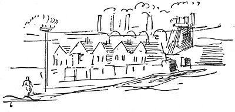
Sonra Fainy kendilerininki gibi tek tip ahşap evlerin sıralandığı kısa çamurlu sokağın iki köşesinden birine koşturulurdu.
Sağda, yarım blok ötedeki Finley'in barında, çamura bulanmış pantolon paçalarının oluşturduğu orman görüntüsü içinde, büyüklerin kokuşmuş, gürültülü ağızları birayla, viskiyle kapanıncaya dek beklemesi gerekirdi. Sonra eve yürürdü, kovanın kaygan sapı ellerini keserken adımlarını özenle atarak.
Maginnis'in Bakkaliye, Yerli ve İthal Malları dükkânı solda, yarım blok ötedeydi. Fainy, vitrindeki kartondan reklamda irmikli bebek maması tutan zenciyi, içinde çeşit çeşit salamlar olan cam kutuları, patates, lahana fıçılarını, yanık şeker kokusunu, talaş, zencefil, tuzlu ringa balığı, jambon, sirke, ekmek, biber, domuz yağını severdi.
“Bir ekmek lütfen, efendim, yarım kilo tereyağı, bir kutu zencefilli çörek.”
Annesinin kendisini iyi hissetmediği kimi akşamlarda Fainy daha uzağa gitmek zorunda kalırdı; Maginnis'in dükkânının önünden yürür, köşeyi döner, tramvayların geçtiği Riverside Caddesi'ne varır, kışın altları oyulmuş kar yığınları arasından simsiyah, ilkyazda eriyen karlarla köpürerek, yazın da kahverengi ve yağ içinde akan küçük ırmağın üzerindeki kırmızı köprüyü aşardı. Irmağın karşısında, eczanenin bulunduğu Riverside ve Main caddelerinin köşesine kadar Polonyalı ve Balkanlar'dan gelen göçmenler otururlardı. Çocukları, Orchard Caddesi'nde oturan Murphy'lerin, O'Hara'ların, O'Flanagan'ların çocuklarıyla dövüşürlerdi.
Fainy, dizleri titreyerek, beyaz kâğıda sarılı ilaç şişesini tek parmaklı eldivenli eliyle sıkıca tutarak yürürdü. Quince'in köşesinde, önlerinden geçmek zorunda olduğu bir çocuk topluluğu bulunurdu. Önlerinden geçmek değildi zor olan; hemen hemen yirmi yarda uzaklaştıktan sonra ilk kar topu, kulağının dibinde vınlardı. Artık dönüş yoktu. Koşmaya başlasa kovalarlardı, ilaç şişesini atsa eve gittiğinde dayak yerdi. Yumuşak bir kar topu ensesine çarpıp eriyerek sırtına akmaya başlardı. Köprüye yarım blok kadar kala şansını deneyip kaçmaya başlardı.
“Korkak kedi . . . Bitli İrlandalı . . . Çarpık bacak Murphy . . . Eve koşuyor aynasıza söylemeye . . .” diye bağırırdı Polonyalı işçi çocukları kar topları arasından. Üzerlerine su döküp donsun diye gece boyu dışarıda bırakarak iyice sertleştirirlerdi kar toplarını, çarptığı yeri kanatırdı.
Arka bahçe güvenlik içinde oynayabildiği tek yerdi. Yıkık parmaklıklar, ezilmiş çöp kutuları, eleğe dönmüş, artık onarılacak yeri kalmamış eski tavalar, tencereler, içinde hâlâ tavuk tüyleri, pislikleri bulunan boş kümesler, yazın yabani otlar, kışın çamur vardı burada; ama McCreary'lerin arka bahçelerinin kıvancı, Tony Harriman'ın içinde Belçika tavşanları bulunan kafesiydi. Tony Harriman veremliydi, solda, girişte annesiyle otururdu. Kakum, susamuru hatta beyaz tilki gibi her çeşit küçük hayvan yetiştirmek isterdi, böyle zengin olacaktı. Öldüğü gün tavşan kafesinin kapısındaki asma kilidin anahtarını hiç kimse bulamadı. Fainy, günlerce çift sıra kalın kümes telinden içeri salata, lahana yaprakları iteleyerek tavşanları besledi. Sonra bir hafta boyunca sulu kar, yağmur yağdı, Fainy bahçeye inemedi. Bakmaya gittiği ilk güzel günde tavşanlardan birinin öldüğünü gördü. Fainy bembeyaz oldu, tavşanın uyuduğuna inandırmaya çalıştı kendini, ama hayvan boylu boyunca kaskatı yatıyordu, uyumuyordu, öteki tavşanlar bir köşeye büzülmüşler, burunlarını oynatarak, kocaman kulaklarını çaresizlik içinde sırtlarına vurarak bakınıyorlardı. Zavallı tavşanlar; Fainy ağlamak istedi. Yukarı, mutfağa koştu, ütü tahtasının altına girdi, mutfak masasının gözünden çekici aldı. İlk denemesinde parmağını ezdi, ama ikincisinde asma kilidi sökmeyi başardı. Kafesin içinde tuhaf, ekşi bir koku vardı. Fainy ölü tavşanı kulaklarından tutup kaldırdı. Yumuşak, beyaz karnı şişmeye başlamıştı, tek ölü gözü ürkütücü biçimde açıktı. Ansızın Fainy'yi anlayamadığı bir duygu sardı, bu duygu ona tavşanı en yakın çöp kutusuna attırdı, yukarı koşturdu. Her yanı hâlâ buz gibi, titreyerek, parmak uçlarında arka sundurmaya çıkıp aşağıya baktı. Soluğu kesilerek öteki tavşanları izledi. Sakınan sıçrayışlarla kafesin kapısına, dışarıya yaklaşıyorlardı. Biri çıkmıştı bile. Sarkık kulaklarını ansızın havaya dikip arka ayaklarının üzerine oturdu. Annesi sobadan ütüyü getirmesi için çağırdı. Sundurmaya döndüğünde tavşanların hepsi gitmişti.
O kış Chadwick Fabrikası'nda grev vardı, babası işini yitirdi. Gün boyu ön odada oturuyor, sigara içerek sövüp sayıyordu:
“Doğrusu, güçlü kuvvetli herifler, Tanrı aşkına; şu baş belası Polonyalı işçilere sırtımdaki koltuk değneğiyle bir temiz sopa atamazsam . . . Mr. Barry'ye de dedim ya, ben greve falan katılmam. Mr. Barry, aklı başında, sessiz bir adamım, zavallı bir sakatım, karımı, çocuklarımı düşünmek zorundayım. Sekiz yıl size bekçilik yaptım, şimdi siz beni sepetleyip hafiye bürosundan bir sürü hayduda veriyorsunuz işimi. Pis, bok soyu, orospu çocuğu.”
“Şu baş belası pis yabancılar grev yapmasaydı,” diye yatıştırıcı bir yanıt verirdi biri.
Orchard Sokağı'nda grev pek hoşa giden şey değildi. Bu, annenin daha çok çalışması, daha daha büyük kazanlar dolusu çamaşır yıkaması, Fainy'yle kız kardeşi Milly'nin okuldan eve dönünce yardım etmek zorunda kalmaları demekti. Sonunda bir gün anne hastalandı, ütüye başlamak yerine yatağa yatması gerekti, beyaz, buruşuk yüzü yastıktan daha beyaz, çamaşır sularından çatlak çatlak elleri çenesinin altında kenetlenmiş uzandı. Doktor geldi, bölge hemşiresi geldi, üç oda da doktor, hemşire, ilaç kokusuyla doldu, Fainy'yle Milly'nin oturmak için bulabildikleri tek yer merdivenler oldu. Orada, birlikte sessizce oturup ağladılar. Sonra annenin yastıktaki yüzü buruşturulmuş mendil gibi küçülüp çiziklerle dolu ak bir şeye dönüştü, öldü, deyip götürdüler.
Cenaze törenini, öbür blokta bulunan Riverside Caddesi'ndeki ölü kaldırıcıları düzenledi. Herkes onu öptüğü, başını okşadığı, küçük bir adam gibi davrandığını söylediği için Fainy çok gururlandı, kendini önemli biri gibi hissetti. Yeni, siyah ceket de giymişti, cepleri, her şeyleri olan büyüklerinki gibi ceket; ama yalnızca pantolonu kısaydı. Ölü kaldırıcılarının odasında daha önce yakından hiç görmediği bir sürü insan vardı; Kasap Mr. Russel, Rahip O'Donnell, Chicago'dan gelen Tim O'Hara Dayı. İçerisi Finley'in dükkânı gibi viski, bira kokuyordu. Tim Dayı zayıf, pütür pütür kırmızı yüzlü, bulanık mavi gözlüydü. Fainy'nin hiç hoşuna gitmeyen, gevşek, siyah ipek bir boyunbağı takmıştı, ansızın belinden ikiye katlanarak eğilip duruyor, çakı gibi kapanıverecekmiş duygusu uyandırıyor, boğuk sesle Fainy'nin kulağına fısıldıyordu.
“Aldırma bunlara dostum, bir alay serseri, ikiyüzlü, hepsi şimdiden körkütük sarhoş. Rahip O'Donnell'e bak, şişko domuz, cenaze giderlerinin hesabını yapmaya başlamıştır bile. Ama boş ver bunlara, anne tarafından O'Hara olduğunu unutma. Ben onları takmam dostum, annen benim öz kardeşimdi, benim kanımdandı.”
Eve döndüklerinde korkunç uykusu vardı, ayakları soğuktu, ıslaktı. Kimse ona aldırmadı. Hıçkırarak yatağın kıyısına oturdu karanlıkta. Ön odadan çatal bıçak sesleri, gürültüler geliyordu ama oraya girmeyi göze alamadı. Duvarın kıyısına büzülüp uykuya daldı. Gözlerine dolan ışıkla uyandı. Tim Dayı'yla babası başucunda durmuş yüksek sesle konuşuyorlardı. Çok gülünç görünüyorlardı, doğru dürüst ayakta duramıyorlardı. Tim Dayı lambayı kaldırdı.
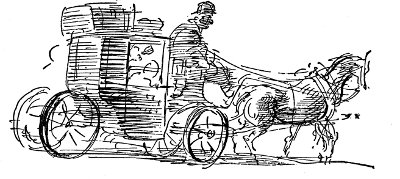
“Bak, Fainy, dostum,” dedi, lambayı Fainy'nin başı üzerinde ürkütücü biçimde sallayarak. “Fenian O'Hara McCreary, kalk, otur, kulaklarını dört aç ve söyle bakalım, koskoca, büyüyen Chicago kentine taşınma düşüncesine ne dersin. Bana sorarsan Middletown boktan bir çöplük orospusu . . . Alınma sakın John . . . Ama Chicago . . . Hey Tanrım, dostum, oraya vardığında burada geçirdiğin tüm yıllar için ölüymüşüm, tabuta çivilenmişim diyeceksin.”
Fainy korkmuştu. Dizlerini çenesine çekti, sallanan lambanın aydınlattığı iki koca adamın sallanan biçimlerine baktı titreyerek. Konuşmaya çabaladı, ama sözcükler dudaklarında kurudu.
“Çocuğun uykusu var, Tim, söylevini dinleyemez . . .” “Giysilerini çıkar Fainy, yatağa gir, iyi bir uyku çek. Sabahleyin gidiyoruz.”
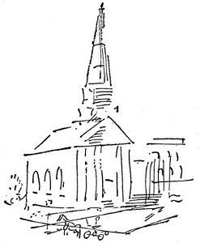
Yağmurlu bir sabahın geç saatlerinde, kahvaltı etmeden, Hodgenson'un kiralık at ahırından Fainy'nin çağırmaya gönderildiği arabanın üstüne iple bağlı kocaman, eski, şişkin sandık ürkütücü biçimde sallanırken yola koyuldular. Milly ağlıyordu. Baba tek söz etmeden yanmamış pipoyu emiyordu, boyuna kimsenin gülmediği küçük şakalar yaparak, ikide bir cebinden bir sürü fatura çıkararak ya da cebinde sakladığı küçük şişeden ağzını şapırdata şapırdata yudumlar alırken Tim Dayı her şeyi düzenledi. Milly, ağladı, ağladı. Fainy, arabanın önünden akıp giden, ansızın çirkin, yana yatmış gibi görünen bildik sokaklara büyük kuru gözlerle baktı; kırmızı köprü, işte Polonyalı işçilerin oturduğu eski, tahta damlı evler, Smith, Smith'in dükkânı . . . işte Billy Hogan elinde sakızla dışarı çıkıyor. Yine hokey oynamaya. Birden Fainy'nin içinden ona bağırmak geldi ama bir şeyler dondurdu onu . . . karaağaçları, arabalarıyla Main Caddesi, kilisenin köşesinde dükkân blokları, sonra itfaiye. Fainy son kez baktı itfaiye arabalarının bakır ve pirinç kıvrımlarının parıldadığı karanlık mağaraya, sonra ilk Protestan Kilisesi'nin önündeki levhayı, Carmel Baptist Kilisesi'ni, tuğladan yapılmış, öteki kiliseler gibi ciddi bir yüzle tam sokağa bakmak yerine köşeleme oturtulmuş Aziz Andrew Kilisesi'ni geçtiler, sonra Gezginci Satıcılar Hanı'nın önündeki çimenlikte dökme demirden üç geyik heykelini, önlerinde bir çimenlik, oymalı sundurmalar, ortancalar olan evleri . . . Sonra evler küçüldü, çimenlikler gözden yitti. Araba, tekerlekleri gıcırdayarak Simpson'un Hububat Ambarı'nın önünden köşeyi dönüp bir dizi berberi, içki evini, aşevini geçti, istasyonda indiler.
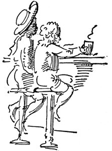
İstasyon büfesinde Tim Dayı herkese kahvaltı ısmarladı. Köşesinde hâlâ etiketi bulunan kocaman, yepyeni mendille Milly'nin yaşlarını kurulayıp Fainy'nin burnunu sildi, domuz pastırması, yumurta, kahveden oluşan kahvaltıyı yemelerini söyledi. Fainy daha önce hiç kahve içmemişti, büyük adam gibi oturup kahve içme düşüncesi onu biraz keyiflendirdi. Milly kahvesini sevmedi, acı olduğunu söyledi. Boş tabaklar, boş kahve bardakları arasında, tezgâhın arkasından azarlarcasına bakan uzun boyunlu, hindi gibi benekli yüzlü kadının boncuk gözleri altında bir süre yalnız bırakıldılar. Sonra korkunç bir şangırtıyla, gümbürtüyle, çuhçuh çuh . . . çuh, tren istasyona girdi. Apar topar kaldırılıp, istasyona sürüklendiler, pipo dumanı dolu vagona itildiler, ne olduklarını anlayamadan tren kalkmıştı, Connecticut'ın kuru yaprak rengi kış görünümü gıcırtılar arasında eriyordu.
Sine-göz (2)
sanki gemideyiz paldır küldür çamurlar içinde yuvarlanarak küf kokulu ahır kokulu arabada gidiyoruz... Durmadan söyleniyordu Ne yaparsın Lucy bunlardan birini masanıza çağırsam? Çok sevimli insanlar Lucy şu zenciler O adamın küçük gümüş kutuda karanfilleri soluğunda İrlanda viskisi kokusu var New York'a giden arabaları yakalama telaşı içinde.
ve Kadın Aman bebeğim umarım geç kalmayız diyordu Scott biletlerle bekliyordu Yedinci Cadde İstasyonu'ndaki peronda koşmak zorundaydık Olympia'dan da boyuna küçücük toplar dökülüyordu herkes toplamak için eğiliyordu kondüktör herkes binsin hanım çabuk hanım
onlar küçücük pirinç toplardı Yedinci Cadde İstasyonu peronunda güneşte pırıl pırıl yanıyorlardı Scott hepimizi yukarı çekti tren kalkıyordu düdük ötüyordu Scott senin avucuna koydu bir küçük avuç dolusu pirinçten minik topu Manila Körfezi Savaşı'ndaki en küçük boy kızıl fişekler büyüklüğünde ve dedi ki İşte toplar Jack
birinci mevki vagonun rahat koltuklarında nutuk atıyordu Niçin olmasın Lucy insanların iyiliği için gerekliyse her an çıkıp bir kurşun yiyebilirim sen yapmaz mısın Jack yapmaz mısın? sen yapmaz mısın kondüktör? madensuyu getiren kahverengi el çantasında küçük bir şişesi bulunan içindeki köşeleri armalı mendillerin mis gibi koktuğu
Havre de Grace'a geldiğimizde O dedi ki Hatırlıyor musun Lucy Susquehanna'ya arabalı vapurla geçerdik köprü yapılmadan önce
Gunpowder Körfezi'ni de
Mac
Kızıl tepeler, küçük korular, çiftlik evleri, inekler, arka ayaklarıyla otlakta çifteler atan kızıl tay, parmaklıklı çitler, yol yol bataklıklar.
“İşte böyle Tim, kendimi kırbaçlanmış it gibi hissediyorum . . . Yaşadığım sürece Tim, doğru olanı yapmaya çalıştım,” deyip duruyordu baba pürüzlü bir sesle. “Şimdi de kim bilir benim için neler diyorlardır?”
“Tanrı aşkına, dostum, yapabileceğin hiçbir şey yoktu, değil mi? Paran yoksa, işin yoksa, ellerinde faturalarıyla bir sürü doktor, ölü kaldırıcı, ev sahibi başına üşüştüyse, senin de bakmak zorunda olduğun iki çocuğun varsa başka ne yapabilirdin?”
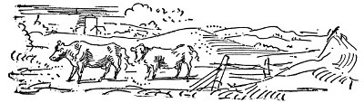
“Ama evlenip de hayatımı düzene sokmaya başladığımdan beri sessiz, saygıdeğer, derli toplu, talihsiz biri oldum. Şimdi kim bilir neler düşünecekler kırbaçlanmış gibi tüydüğüm için?”
“John, inan bana, öz kardeşim olan, benimle aynı kanı taşıyan ölüye leke sürmek isteyecek son kişi benim . . . ama bu ne senin suçun ne benim suçum . . . bu, yoksulluğun suçu, yoksulluk da düzenin suçu . . . Fenian bir dakika için Tim O'Hara'yı dinle, Milly sen de dinle, çünkü bir kız da erkek gibi bilmelidir bunları ve hayatında ilk kez Tim O'Hara doğruyu söylüyor . . . Bu, insana emeğinin karşılığını vermeyen düzenin suçudur . . . Kapitalist düzenden bir şeyler elde edebilenler dolandırıcılardır, kısa sürede milyoner olurlar . . . Ama John gibi, benim gibi onuruyla çalışan işçiler yüz yıl çalışsalar da doğru dürüst ölülerini kaldıracak parayı bile bir araya getiremezler.”
Çerçeveleri sarsılan camın önünden bembeyaz kıvrıldı duman, ağaçların, telgraf direklerinin küçük, kare biçimli, tahta damlı evlerin, kentlerin, tramvayların, burunlarından duman saçan atlarıyla sıraya girmiş kiralık arabalar dizisinin önünden kıvrıldı.
“Kim topluyor bizim emeğimizin ürünlerini, kahrolası işadamları, şirketler, hayatları boyunca bir tek üretici iş yapmamış olan komisyoncular.”
Fainy'nin gözleri bir yükselip bir sarkan telgraf tellerini izliyordu.
“Chicago'ya gelince, orası da cennet değil elbette John, ama işçinin kasları ve kafası için Doğu'dan daha iyi bir Pazar şimdilik . . . Nedeni mi, bana nedenini mi sordun?.. Arz ve talep, Chicago'da işçiye ihtiyaç duyuyorlar.”
“Tim, sana dedim ya, kendimi kırbaçlanmış it gibi hissediyorum.”
“Düzen John, kahrolası çirkef düzen.”
Vagondaki büyük telaş Fainy'yi uyandırdı. Karanlıktı. Milly yine ağlıyordu. Nerede olduğunu kestiremedi.
“Evet, baylar,” diyordu Tim Dayı, “şu bizim, küçük, yaşlı New York'a vardık sayılır.”
İstasyon aydınlıktı, hâlâ gece olduğunu sanan Fainy'yi şaşırttı bu. Milly'yle ikisini uzun süre bavulun üzerinde oturur bıraktılar bekleme salonunda. Bekleme salonu çok büyüktü, tanımadıkları insanlarla doluydu, resimli kitaplardakiler gibi korkutucu insanlarla. Milly ağlayıp duruyordu.
“Hey, Milly, zırlamayı kesmezsen şimdi yumruğu yiyeceksin.”
“Niye?” diye hıçkırdı Milly, daha da çok ağlayarak.
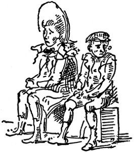
Kimse birlikte olduklarını anlamasın diye Fainy elden geldiğince uzağında durdu onun. Tam kendisi de ağlayacağı sırada babası ve Tim Dayı gelip onları, bavulları lokantaya götürdü. Soluklarından çok güçlü, taze viski kokusu yayılıyor, gözleri pırıl pırıl parlıyordu. Beyaz örtülü bir masaya oturdular, beyaz giysili, sevimli zenci üzerinde yazılar olan büyük kâğıt parçası verdi ellerine.
“Şimdi güzelce karnımızı doyuralım,” dedi Tim Dayı, “şu dünyada yapabileceğimiz en son şey buysa.”
“Lanet olası fiyatlar,” dedi babası, “suçlanması gereken düzen, yine işte.”
“Papa'nın canı cehenneme,” dedi Tim Dayı. “Seni sosyal demokrat yapacağız şimdiden.”
Fainy'ye kızarmış tavuk, dondurma, pasta verdiler, hep birlikte trene koşmaları gerektiğinde midesinde korkunç bir sancı duydu. Kömür ve ter kokan bir vagona girdiler. “Ne zaman yatacağız?” diye sızlanmaya başladı Milly. Tim Dayı kendisine havalar vererek, “Yatmayacağız,” dedi. “Küçücük bir fare gibi burada uyuyacağız . . . peynirin içindeki küçücük fare gibi.” Tren kalkarken yeni bir gözyaşı seli içinde, “Fareleri sevmem,” diye haykırdı Milly.
Fainy'nin gözleri acıyordu, kulaklarında sürekli uğultu, makaslarda takırtılar, takırtılar, köprülerin altından geçerken ansızın homurtular vardı. Bu tüneldi, Chicago'ya dek tüm yol tüneldi. Karşısında oturan babasının, Tim Dayı'nın yüzleri kırmızıydı, homurtuluydu, görünüşlerinden hiç hoşlanmadı, ışık dumanlıydı, titrekti, dışarısı boydan boya tüneldi, gözleri acıyordu, kulaklarında tekerlekler, raylar uğulduyordu, uykuya daldı.
Uyandığında bir kentteydiler, tren anacaddeden geçiyordu. Güneşli bir sabahtı. İşlerine giden insanlar, dükkânlar, kaldırım kıyısına sıralanmış atlı arabalar, yaylı arabalar, gazete satan çocuklar, tütüncülerin önünde tahtadan yapılmış Kızılderililer gördü. Önce rüyadayım sandı, ama sonra hatırladı, burasının Chicago olduğunu düşündü. Karşısındaki sırada babasıyla Tim Dayı uyuyorlardı. Ağızları açıktı, yüzleri lekeliydi, görünüşlerinden hiç hoşlanmadı. Milly, her yanını örten yün atkıya sarınmıştı. Tren yavaşlıyordu, istasyondaydılar. Burası Chicago'ysa, inmeleri gerekiyordu. Tam o anda kondüktör geçti. Papaz O'Donnell'a benzeyen yaşlı bir adamdı.
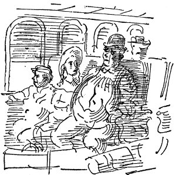
“Şey, efendim, burası Chicago mu?”
“Chicago'ya daha çok var, evlat,” dedi kondüktör gülümsemeden. “Burası Syracuse.”
Sonra hepsi uyandı, saatlerce, saatlerce önlerinden aktı telefon direkleri, kasabalar, ahşap evler, sıra sıra parıltılı pencereleriyle kiremit fabrikaları, çöplükler, tren hangarları, sürülmüş topraklar, çayırlar, inekler . . . Milly'yi tren tuttu, Fainy'nin bacakları bu denli uzun süre oturmaktan kopacak gibi oldu. Kimi yerlerde kar yağıyordu, kimi yerler güneşliydi. Milly'nin midesi bulandı durdu, pis pis kusmuk koktu, yine karanlık oldu, hepsi uyudu; sonra yine aydınlık, sonra yine dizi dizi sıralandı kasabalar, ahşap evler, fabrikalar; tümsekler yaptı ambarlar, depolar, göz alabildiğine uzandı tren manevra alanları . . . Burası Chicago'ydu.
Ama öylesine soğuktu, rüzgâr tozları yüzüne öylesine savuruyordu, tozdan, yorgunluktan gözleri öylesine kapanıyordu ki, hiçbir yere bakamadı. Uzun süre bekledikten, Fainy'yle Milly soğukta birbirlerine sarılıp durduktan sonra arabaya bindiler, gittiler, gittiler . . . öylesine uykuluydular ki trenin nerede bitip arabanın nerede başladığını hiçbir zaman tam olarak hatırlayamadılar. Tim Dayı'nın sesi gururla, coşkuyla söylenip durdu, Chicago, Chicago, Chicago. Baba, çenesi koltuk değneğinde, oturdu. “Tim, kırbaçlanmış it gibiyim.”
Fainy, Chicago'da on yıl kaldı.
Önceleri okula gitti, cumartesi öğle sonraları arka avlularda beyzbol oynadı, ama sonra diploma töreni gelip çattı. Tüm çocuklar, “Benim Ülkem, Bu Ülke Senin” marşını söylediler, okul bitti. Çalışmak zorundaydı. O sıralarda Tim Dayı'nın North Clark Caddesi'nin tozlu ara sokaklarından birinde, yıkık dökük, eski tuğla yapının zemin katında matbaası vardı. Matbaa, yapının genellikle ambar olarak kullanılan, fareleriyle ünlü, küçük bir bölümünü kaplıyordu. Tek geniş camı, eski İngilizce harfler süslüyordu: tımothy o'hara, matbaacı.
“Bak, Fainy, dostum,” dedi Tim Dayı, “bu işi çekirdekten öğrenme olanağını elde edeceksin.” Böylece sağa sola koşturup haber taşımaya, dergi, kâğıt artıkları, afiş paketleri getirmeye, tramvayların önünden atlamaya, büyük yük beygirlerinin köpüklü ağızlarının altından geçmeye, yük arabalarında sarsılarak gitmeye başladı. Götürülecek haber olmadığında preslerin altını süpürüyor, matbaa harflerini temizliyor, çöp sepetlerini boşaltıyor, işler çok sıkıştığı zamanlarda dizgiciye kahve, sandviç, Tim Dayı'ya küçük bir şişe şarap almak için köşe başına koşuyordu.
Baba, yıllarca iş arayarak, koltuk değneğiyle ortalıkta dolaşıp durdu. Geceleri Tim Dayı'nın arka sundurmasında piposunu içip kötü yazgısına sövdü, arada bir de Middletown'a geri dönme tehditleri savurdu. Sonra bir gün zatürreye yakalandı, Göğüs Hastalıkları Hastanesi'nde sessizce öldü. Ölümü, Tim Dayı yeni linotip makinesi aldığı sıralardaydı.
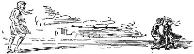
Tim Dayı kapıldığı büyük coşku yüzünden tam üç gün ağzına içki sürmedi. Döşeme tahtaları da öylesine çürümüştü ki tüm mahzene baştan aşağı tuğla zemin yapmak zorunda kaldılar linotipi koymak için. Tim Dayı herkese, “Yeni bir tane daha aldığımızda, tüm döşemeyi çimento kaplayacağız,” diyordu. Gün boyu hiç kimse çalışmadı. Herkes çevresine toplanıp kilise orgu gibi ortada duran bu uzun, kara, karmaşık makineye baktı. Makine çalışıp, matbaa erimiş madenin sıcak kokusuyla dolduğunda, herkesin gözleri klavyenin üzerinde fırlayıp bükülen titrek, meraklı kolu izledi. Linotipin döktüğü parlak, ılık satırı elden ele dolaştırırlarken nedense Mike dedikleri yaşlı Alman dizgici gözlüklerini alnına kaldırıp, “Elli beş yıldır matbaacıyım, şimdi yaşlılığımda, hayatımı kazanmak için sırtımda tuğla taşımak zorunda kalacağım,” diye bağırdı.
Tim Dayı'nın yeni makineyle dizdirip bastığı ilk şey bir tümceydi: “Dünya işçileri birleşin; zincirlerinizden başka yitirecek hiçbir şeyiniz yok.”
Fainy on yedisine girdiğinde, akşam işten eve dönerken parlak, baş döndürücü batı göklerinde kentin ışıklarını pırıl pırıl gördüğü zaman daha yeni yeni etekleri ayak bileklerini, kızların iç çamaşırlarını düşünmeye başlarken Chicago matbaacıları greve gitti. Tim O'Hara her zaman bir sendikanın yöneticisi olmuştu, sendikanın tüm baskı işlerini parasız yapmıştı. Hatta, “Bir Yurttaş” diye imzaladığı, “Şerefli Bir Protesto” başlığı taşıyan bildiri bile yayımlamıştı. Bunu, bir akşam operatör evine gittikten sonra linotipte Fainy'nin dizmesine izin vermişti. Bir tümce Fainy'nin aklına takıldı, o gece yattıktan sonra kendi kendine yineledi: “Açgözlü ayrıcalıklıların yağmasına karşı direnmek üzere bütün namuslu insanların birleşme zamanı gelmiştir.”
Ertesi gün pazardı, Fainy dağıtılacak bir paket bildiriyle Michigan Caddesi'ne gitti. Erken bastırmış bir ilkbahar günüydü. Gölün üzerinde eriyen sarımsı buzların ötesinden beklenmedik çiçek kokuları yüklü hafif bir esinti geliyordu. Kızlar korkunç güzeldi, etekleri esintide uçuşuyordu, Fainy ilkbaharla kanının sıcacık kaynadığını duydu, öpüşmek, yerlerde yuvarlanmak, buzların üzerinde koşmak, telgraf direklerinin tepesinde nutuk atmak, tramvaylara sıçramak geçti içinden; ama bunların yerine bildiri dağıttı, pantolonunun yıpranmışlığına üzüldü, gıcır gıcır giysisi, birlikte yürüyeceği çiçek gibi kız arkadaşı olsun istedi.
“Hey delikanlı, şu bildirilerini dağıtma iznini görelim, bakalım.” Kulağında homurdanan aynasızın sesiydi bu. Fainy, omzunun üzerinden polise şöyle bir baktı, bildirileri atıp kaçtı. Pırıl pırıl kara arabaların, faytonların arasına dalıp çıktı, ara sokakta koştu, yürüdü, yürüdü, tam açılacağı sıra bir köprüyü geçmeyi becerene dek arkasına bakmadı. Polis de zaten onu izlemiyordu.
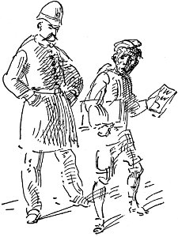
Bir fıstıkçının düdüğü kulağında alayla çınlarken uzun süre kaldırımda durdu.
O gece yemekte, dayısı bildirileri sordu.
“Elbette, bütün göl kıyısına dağıttım . . . Aynasızın biri durdurmaya çalıştı, ama ona nasıl kaçılacağını gösterdim.” Masadaki herkesten bir yuh sesi yükselince kıpkırmızı kesildi. Ağzını kızarmış patatesle doldurdu, tek söz etmedi. Dayısı, yengesi, üç kızı güldüler, güldüler. “Güzel, polisten daha hızlı koşabilmen iyi bir şey,” dedi Tim Dayı. “Yoksa seni kefaletle içerden çıkarmam gerekirdi, bu da epey pahalıya patlardı.”
Ertesi sabah, çiğ et suratlı bir adam merdivenleri çıkarken Fainy ortalığı süpürüyordu. Adam Fainy'nin daha önce hiç görmediği ince, siyah bir çeşit puro içiyordu. Cam kapıyı tıklattı.
“Mr. O'Hara'yla, Timothy O'Hara'yla konuşmak istiyorum.”
“Daha gelmedi, birkaç dakikaya kadar burada olur, bekleyecek misiniz efendim?”
“Bekleyeceğime bahse girebilirsin.” Adam bir iskemleye ilişti, önce puronun çiğnenmiş ucunu ağzından çıkarıp uzun uzun, düşünceli düşünceli baktı, sonra tükürdü.
Tim O'Hara gelince işyerinin kapısı gürültüyle kapandı. Fainy, bu adamın bildiri işini izleyen hafiye olabileceği korkusuyla, tedirginlik içinde dolaştı ortalıkta. Sesler yükseldi, alçaldı, yabancı kısa tümcelerle, yüksek sesle azarlar gibi konuşuyordu. O'Hara'nın uzun tümcelerinde sitem havası vardı, arada bir rehini paraya çevirme sözlerini yakaladı Fainy, sonra ansızın kapı açıldı, yabancı dışarı fırladı, yüzü öncekinden de mordu. Demir kapı aralığında döndü, cebinden yeni bir puro çıkarıp eskisiyle yaktı. Puro ve mavi dumanlar arasından homurdanarak, “Mr. O'Hara, düşünmek için yirmi dört saatiniz var . . . Söyleyeceğiniz tek sözle dava duracak,” dedi. Sonra da ardında ekşi kokulu duman bulutu bırakarak sokaktan aşağı yürüdü.
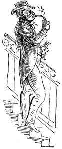
Bir dakika sonra, yüzü kâğıt gibi bembeyaz Tim Dayı dışarı çıktı. “Fenian, dostum,” dedi, “git kendine iş bul. Ben işi bırakıyorum . . . Gözünü dört aç. Ben bir şeyler içeceğim.” Tam altı gün boyunca sarhoş gezdi. Bu sürenin sonunda ellerinde celp kâğıtlarıyla uysal görünüşlü birkaç adam ortaya çıktı, Tim Dayı mahkemeye gidip iflas istemine itiraz edecek kadar ayılmak zorunda kaldı.
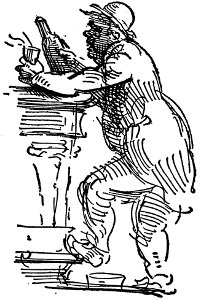
Mrs. O'Hara küplere bindi, bağırdı çağırdı, “Sana demedim mi Tim O'Hara, bu Tanrıtanımaz sendikalarla, sosyal demokratlarla, yalancı işçi kahramanlarıyla uğraşmaktan kimseye hayır gelmez diye, hepsi de senin gibi ayyaş sokak serserileri değil mi Tim O'Hara? Elbette aklı başında büyük matbaacılar birleşip şu senin bozguncu gazeteni satın alırlar, seni ezerler, sen de zaten bunu hak ettin, Tim O'Hara, sen ve senin sosyalist ayyaşlığın; yalnızca zavallı karını, çaresiz bebeklerini düşünmeleri gerekirdi, şimdi hepimiz açlıktan öleceğiz, hepimiz; toplayıp başıma getirdiğin asalaklar, sırtımızdan geçinenler de.”
“Peki, öyleyse şunu söyleyeceğim,” diye bağırdı Fainy'nin kardeşi Milly. “Bu evde yediğim her lokma ekmek için tırnaklarım sökülene dek köleler gibi çalıştım.” Ve kahvaltı masasından fırlayıp dışarı çıktı. Tepesinde fırtınalar koparken Fainy öylece oturdu; sonra kalktı, dışarı süzülürken cebine bir mısır ekmeği attı. Koridorda Chicago Tribune gazetesinin “İşçi arayanlar” bölümünü buldu, şapkasını aldı, kulaklarında çınlayan çan sesleriyle dolu nemli pazar sabahının içine daldı. Tramvaya bindi, Lincoln Parkı'na gitti. Uzun süre mısır ekmeğini çiğneyip işçi arayanlar sütununa bakarak bir sırada oturdu: Erkek çocuk aranıyor. Ama hiçbiri iç açıcı değildi. Bir şeyi kesinlikle biliyordu, grev bitene dek matbaalarda iş bulamayacaktı. Sonra gözüne bir şey ilişti.
Tutkulu, edebiyattan anlayan, matbaacılığı bilen akıllı genç aranıyor. Satış ve dağıtım. Ücret haftada 15 dolar. Mektupla başvurulması. Posta kutusu 1256 b.
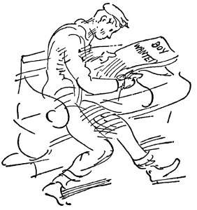
Ansızın Fainy'nin başı döndü. Akıllı genç, işte bu benim, tutku, edebiyattan anlama . . . Vay, vay Geriye Bakış'ı bitirmeliyim . . . yaşadık, okumayı da severim, bıraksalar linotipte yazı dizer, baskı yapabilirim . . . Haftada on beş kâğıt . . . hiç kötü değil, on kâğıt birikir. Ve kafasında başvuru mektubunu yazmaya başladı.
sayın bay (sayın bayım)
ya da belki baylar
Bu pazar günkü Tribune gazetesinde verdiğiniz iş ilanına başvurarak ya da başvurmak istiyorum, (izninizle söyleyeyim ki) on yedi yaşındayım, yok hayır, on dokuz, matbaacılık ve baskı işlerinde birkaç yıllık deneyimim var, tutkuluyum, matbaacılık ve baskı işlerini çok iyi bilir, anlarım,
Yoo, hayır, bunu iki kez söyleyemem . . . Ve bu işi çok istiyorum . . . Sürdürdükçe kafası iyice karışıyordu.
Kendini yerfıstığı satıcısının önünde buldu. Dondurucu bir soğuk vardı, gölün kırılmış buzlarından, kararmış sularından buz gibi rüzgâr uğuldayarak esiyordu, ilanı yırtıp gazetenin geri kalanını rüzgâra bıraktı. Sonra da kendine sıcacık bir paket fıstık aldı.